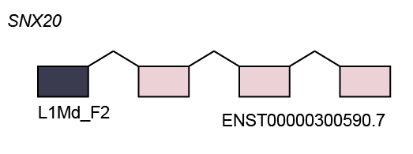
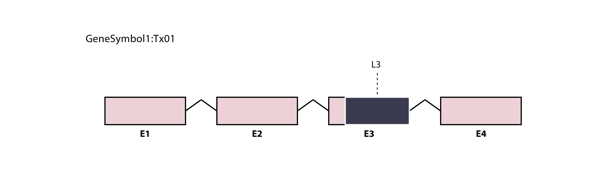
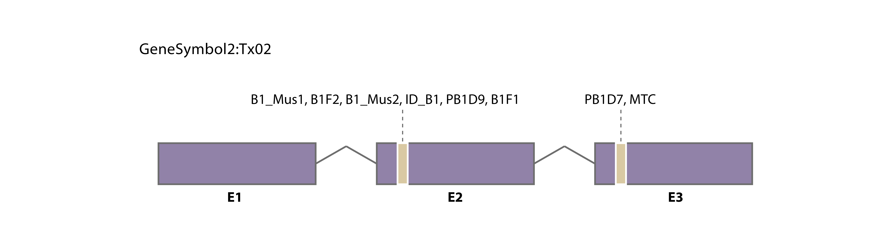
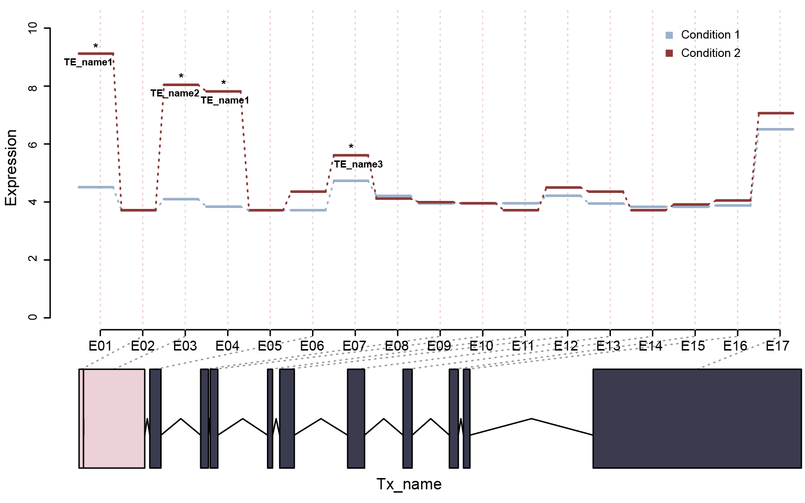
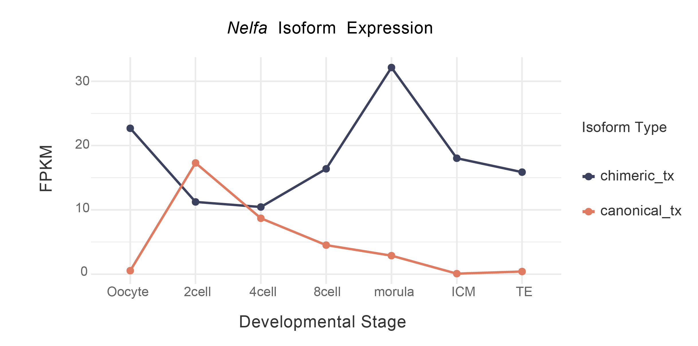
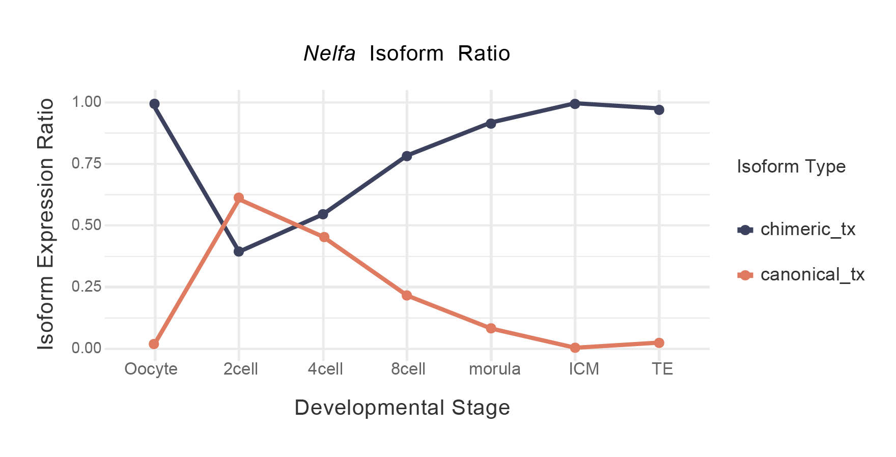
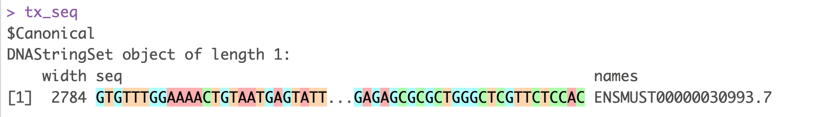
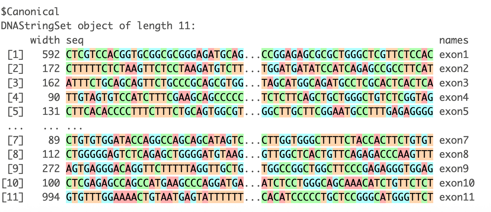

This tutorial introduces the downstream analysis modules available in TEDDY. It requires output objects generated from the core workflow tutorial. Users may adapt the analysis according to their study design, biological question, and data type.
1. Prerequisites
Define the same work_dir used in the core workflow, and
load the required objects in each downstream module as needed.
library(Teddy)
work_dir <- "path/to/teddy_output"
annotated_gtf <- file.path(work_dir, "GTF", "annotated.gtf")
combineSE_file <- file.path(work_dir, "meta", "combineSE.rds")
te_file <- file.path(work_dir, "meta", "te_annotation.rds")
se_file <- file.path(work_dir, "meta", "se.rds")
anno_file <- file.path(work_dir, "meta", "anno.rds")
chi_GTF_file <- file.path(work_dir, "meta", "chi_GTF.rds")
TEposition_file <- file.path(work_dir, "meta", "TEposition.rds")2. Differential TE-chimeric exon usage analysis
TEDDY uses ChimericDrivenTest() to test whether
TE-chimeric exonic bins show condition-associated usage changes relative
to the other exonic bins from the same gene locus.
2.1 Run ChimericDrivenTest()
se <- readRDS(se_file)
anno <- readRDS(anno_file)
condition <- c(
"control", "control", "control",
"treatment", "treatment", "treatment"
)
chi_dds <- ChimericDrivenTest(
SEobject = se,
condition = condition,
annotation = anno
)
saveRDS(
chi_dds,
file = file.path(work_dir, "meta", "chi_dds.rds")
)Notes
-
SEobjectis the bin-level quantification object generated bycountAnno(). -
conditionshould match the sample order inse. -
annotationis the TE-annotated exonic-bin annotation generated byprepareAnno(). - The model tests whether the usage of TE-chimeric exonic bins changes across conditions relative to non-chimeric bins from the same gene locus.
2.2 Extract test results
chi_test <- extractTest(
object = chi_dds,
filter = TRUE
)
saveRDS(
chi_test,
file = file.path(work_dir, "meta", "chi_test.rds")
)Example output:
LRT p-value: full vs reduced
DataFrame with n rows and 8 columns
groupID featureID exonExpr TEclass dispersion stat pvalue padj
<character> <character> <numeric> <character> <numeric> <numeric> <numeric> <numeric>
ENSMUSG00000000182.9 ENSMUSG... E003 1.145 B3A,(CA)n,... 12.0000 0.201 0.654 1.000
ENSMUSG00000000266.10 ENSMUSG... E021 15.564 MIRb,MER5A,L2a 0.2515 0.630 0.428 0.986
ENSMUSG00000000320.9 ENSMUSG... E001 2.339 B1_Mus2,B1_Mus2 0.9155 0.101 0.751 1.000
ENSMUSG00000000320.9 ENSMUSG... E007 0.810 RSINE1,B4A 1.3008 3.093 0.079 0.460
ENSMUSG00000000567.5 ENSMUSG... E003 4.232 AT_rich,A-rich,... 2.2795 0.232 0.630 1.000Notes
filter = TRUE removes uninformative all-zero rows.
2.3 Calculate fold changes
calculateFoldchange() can be used to estimate
TE-chimeric exon usage fold changes for selected candidate genes.
candidate_genes <- chi_test$groupID[chi_test$padj < 0.05]
fc_list <- calculateFoldchange(
object = chi_dds,
genes = candidate_genes,
crossVar = "condition"
)
saveRDS(
fc_list,
file = file.path(work_dir, "meta", "chi_foldchange.rds")
)Notes
-
candidate_genescan be selected fromextractTest()results. -
crossVarshould match the condition variable used inChimericDrivenTest(). - The returned object stores fold-change estimates for the selected TE-chimeric candidate loci.
3. Visualization module
3.1 Prepare exon-level GTF input for visualization
Several visualization functions require exon-level transcript
structure annotations. These records can be obtained either from the
annotated GTF generated by the core workflow or from the
combineSE object.
Option 1: use the annotated unified GTF generated in the core workflow
GTF <- extractGTF(
gtfFile = annotated_gtf,
filter = 1,
type = "exon"
)Option 2: use the annotated GTF stored in
combineSE
combineSE <- readRDS(combineSE_file)
GTF <- extractGTF(
combineSE = combineSE,
filter = 1,
type = "exon"
)Notes
filter specifies the minimum FPKM threshold used when
extracting transcript structures.
3.2 Visualize TE-chimeric transcript structure with
formPlot()
formPlot() displays the exon-chain structure of a
selected transcript and highlights the associated TE-derived exon.
chi_GTF <- readRDS(chi_GTF_file)Select a candidate transcript and TE feature from
chi_GTF:
txid <- chi_GTF$transcript_id[1]
geneName <- chi_GTF$gene_name[1]
TEname <- chi_GTF$TE_name[1]Generate the transcript structure plot:
formPlot(
GTF = GTF,
txid = txid,
rank = 1,
geneName = geneName,
TEname = TEname
)
Notes
rank indicates the transcript-order rank of the
TE-overlapping exon and can be obtained from the
tx_exon_rank column in chi_GTF.
3.3 Visualize detailed TE positions with
formTEPositionPlot()
formTEPositionPlot() provides a higher-resolution view
of TE-chimeric structures.
TEposition <- readRDS(TEposition_file)
txid <- unique(TEposition$transcript_id)[1]
formTEPositionPlot(
GTF = GTF,
TEposition = TEposition,
txid = txid
)
The plot colors can be customized:
txid <- unique(TEposition$transcript_id)[2]
formTEPositionPlot(
GTF = GTF,
TEposition = TEposition,
txid = txid,
exonFill = "#D8D0E8",
TEfill = "#E6C86E",
borderColor = "#3B3650",
TEborderColor = "white"
)
3.4 Visualize TE-associated bin-level expression with
diffBinPlot()
diffBinPlot() visualizes bin-level expression patterns
for a selected candidate locus together with the transcript structure
and TE-associated exon.
Generate the bin-level visualization:
target_gene <- chi_test$groupID[1]
txid <- as.character(anno$tx_name[anno$gene_id == target_gene][[1]][1])
idx <- which(anno$gene_id == target_gene)
target_gene_name <- mapGeneName(target_gene, GTF)
count_mat <- SummarizedExperiment::assay(se)
condition <- c(
"control", "control", "control",
"treatment", "treatment", "treatment"
)
labels <- c("control", "treatment")
diffBinPlot(
count = count_mat,
conditions = condition,
annotation = anno,
idx = idx,
labels = labels,
Title = target_gene_name,
gtf = GTF,
txid = txid,
chi_test = chi_test,
gene_name = target_gene_name
)
Notes
count_matis extracted from the bin-levelSummarizedExperimentgenerated bycountAnno().annotationis the bin-level annotation stored inrowData(se).chi_testis the result extracted fromChimericDrivenTest()as shown in Section 2.
3.5 Visualize TE-chimeric isoform dynamics
For illustration, we use Nelfa as an example candidate
gene.
combineSE <- readRDS(combineSE_file)
chi_GTF <- readRDS(chi_GTF_file)
te <- readRDS(te_file)
gene <- "Nelfa"
chimeric_tx <- pick_chimeric_tx(
gene = gene,
combineSE = combineSE,
te = te,
return_all = FALSE
)
canonical_tx <- pick_canonical_tx(
combineSE = combineSE,
gene = gene,
assay_name = "FPKM"
)
txid <- c(
TE_chimeric = chimeric_tx,
Canonical = canonical_tx
)
txid <- txid[!is.na(txid)]Notes
Select a gene of interest. Candidate genes can be chosen from
chi_GTF or from significant results in
chi_test.
group <- clean_sampleNames(colnames(combineSE))
group_order <- unique(group)
plotIsoformDynamics(
combineSE = combineSE,
txid = txid,
gene_name = gene,
assay_name = "FPKM",
group = group,
group_order = group_order,
ratio = FALSE,
cols = c(
"#de7b60",
"#3c415e"
)
)
To compare relative isoform usage, set ratio = TRUE:
plotIsoformDynamics(
combineSE = combineSE,
txid = txid,
gene_name = gene,
assay_name = "FPKM",
group = group,
group_order = group_order,
ratio = TRUE,
cols = c(
"#de7b60",
"#3c415e"
)
)
Notes
groupdefines sample-level labels and can be derived fromcolnames(combineSE)using the helper functionclean_sampleNames.ratio = FALSEplots transcript-level expression values;ratio = TRUEplots the relative fraction of selected isoforms within each group.
4. TE-chimeric sequence reconstruction and extraction
4.1 Prepare genome sequence object
Sequence extraction requires a BSgenome object that
matches the genome build used for your alignment and annotations
(GTF/TE).
Here is how to load the commonly used mouse (mm10) or human (hg38) assemblies:
4.2 Export transcript sequences
export_transcript() extracts transcript sequences from
exon structures, either concatenating them into a single spliced
sequence (collapse = TRUE) or returning exons separately
(collapse = FALSE).
tx_seq <- export_transcript(
txid = txid,
GTF = GTF,
genome = genome,
write = FALSE,
collapse = TRUE
)
tx_seqExample output:

To inspect exon sequences separately, set
collapse = FALSE:
exon_seq <- export_transcript(
txid = txid,
GTF = GTF,
genome = genome,
write = FALSE,
collapse = FALSE
)
exon_seqExample output:

Notes
-
txidaccepts one or multiple transcript IDs. -
GTFis generated byextractGTF(type = "exon"). -
write = FALSEreturns sequences in R;write = TRUEexports FASTA files tooutdir.
5. TF analysis module
5.1 Prepare a motif PWM
Users may obtain motif profiles from public databases such as JASPAR. Here we use ARID3A as an example.
# Optional: Users can install them from Bioconductor
## BiocManager::install(c("JASPAR2022", "TFBSTools"))
library(JASPAR2022)
library(TFBSTools)
Arid3a_pfm <- getMatrixByID(JASPAR2022, ID = "MA0151.1")
Arid3a_pwm <- TFBSTools::toPWM(Arid3a_pfm)
pwm <- as.matrix(Arid3a_pwm@profileMatrix)Optionally, users can provide their own probability matrix and
convert it with pcmFunction():
pcm <- read.table("path/to/motif_matrix.txt", header = TRUE)
colnames(pcm) <- c("A", "C", "G", "T")
pwm <- pcmFunction(pcm)5.2 Search motifs in TE-associated regions
## Optional: only needed if starting from this section
# combineSE <- readRDS(combineSE_file)
# chi_GTF <- readRDS(chi_GTF_file)
te <- readRDS(te_file)
library(BSgenome.Mmusculus.UCSC.mm10)
genome <- BSgenome.Mmusculus.UCSC.mm10
motif_result <- MotifSearch(
object = chi_GTF,
te = te,
pwm = pwm,
genome = genome,
minoverlap = 15,
min.score = 0.9,
filter = 2
)The returned object contains TF motif sites, linked TE-chimeric transcripts and the source TE regions.
names(motif_result)[1] "match_results" "overlap_results" "target_te"
motif_hits <- motif_result$match_results
motif_te <- motif_result$target_te
motif_candidates <- motif_result$overlap_resultsNotes
objectrequireschi_GTFgenerated byprocessGTF().genomemust match the same genome build, as detailed in Section 4.1.filtercontrols the minimum number of motif matches required to retain a TE-associated candidate.minoverlapdefines the minimum overlap required between TE-chimeric features and TE annotations.min.scoredefines the minimum PWM match score for retaining motif hits.